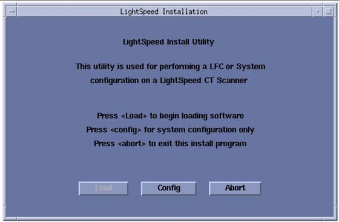
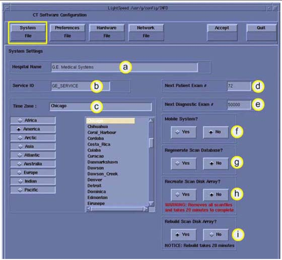
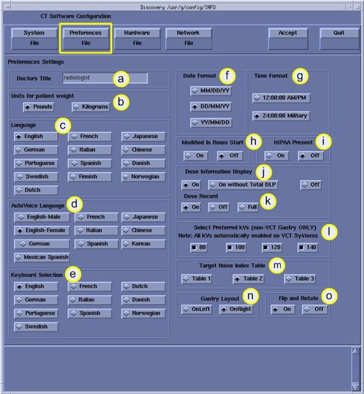
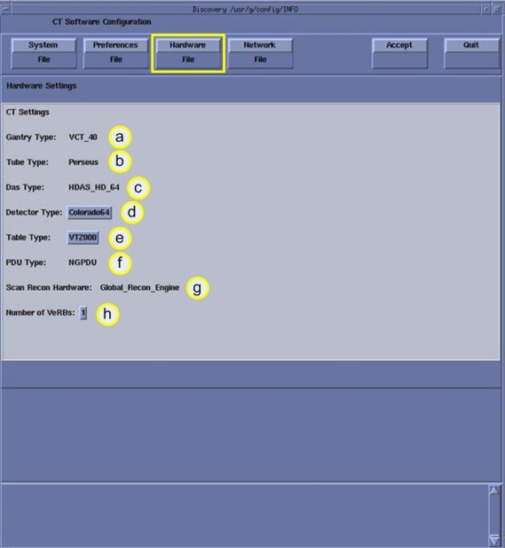
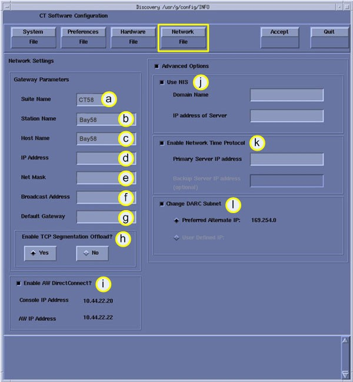
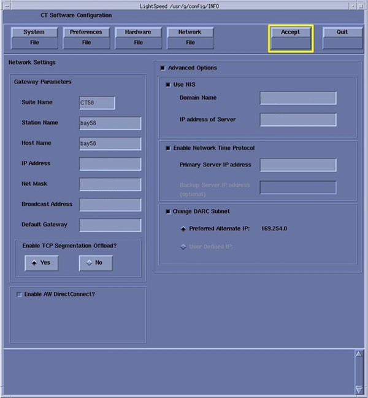

Operating Documentation
Direction 5193574-800, Rev# 22
LightSpeed 7.X Service Methods
Module Version 1.0, Version Date 4/22/10
Operating Documentation |
For convenient removal and use during installation, System Configuration Data Sheets are located in Section 1.2.
Below is a summary of key information, some of which is required from the customer, to complete system configuration. When gathering this information, refer to Configure Site Specific Setup in Section 2.
System File Information:
Hospital name (Ask the customer for ALL related fields.)___________________________
Service ID________________________________________________________________
Patient Info:
Next MOD#_______________________________________________________________
Exam #, Diagnostic # 50000 default___________________________________________
Click [YES] to regenerate database.
Click [NO] for Mobile System.
HIPAA ___________________________________________________________________
Preference File Information:
Doctor’s title______________________________________________________________
Date Format______________________________________________________________
Time Format______________________________________________________________
Language type_____________________________________________________________
Selected Fast Cal KV’s - default - ALL unless instructed otherwise___________________
Dose Information - default - Unless instructed otherwise___________________________
Dicom - default - Unless instructed otherwise___________________________________
Hardware File Information:
Select table type GT 2000 or GT 1700__________________________________________
Default for all others
Network printer - default_____________________________________________________
Network file Information:
Suite Name - (from FE or hospital)____________________________________________
Host Name - (from FE or hospital)____________________________________________
IP Address_______________________________________________________________
Net Mask ________________________________________________________________
Broadcast Address_________________________________________________________
Default Gateway___________________________________________________________
Advanced options - default - Unless instructed otherwise by the FE____________________ ____________________________________________________________________________
Record valuable system information in the data sheets that follow. Consult with your customer or network administrator to obtain the information. Understanding how the customer plans to use their CT scanner and their network and filming expectation reduces the time required to reconfigure the system.
Table 1: Manual Film Composer Options
| MANUAL FILM COMPOSER OPTIONS | |
| Slide Format (if available): | |
| Greyscale: | |
| Auto Printing: | |
| Auto Clear Page: | |
| Icon Labels: | |
| Expose Order: | |
| No. of Copies: | |
Table 2: System Network Configuration
| SYSTEM NETWORK CONFIGURATION | |||
| FIELD NAME: | SETENV NAME: | FIELD VALUE: | |
| System Settings: | Service ID | SERVICE_ID | |
| Hospital Name | HOSPITAL_NAME | ||
| Exam Number * | * Ask customer or check log | ||
| DAS Type | DASTYPE | ||
| PDU Type | PDUTYPE | ||
| Network Settings: | Gateway Host Name | GATEWAY_HOSTNAME | |
| Gateway IP | GATEWAY_IP | ||
| Gateway Net Mask | GATEWAY_NETMASK | ||
| Gateway Broadcast Mask | GATEWAY_BROADCAST | ||
| Suite Name | SUITEID | ||
| Option | Network Printer IP Address | ||
| Option | HIS Server IP Address | ||
| Option | HIS Server AE Title | ||
| Option | HIS server AE Port | ||
| Option | CT Server AE Title | ||
| Option | Connect Pro IP Address | ||
HOST ETHERNET ADDRESS
_________:_________:_________:_________:_________:_________
Record the network application (image transfer) configuration.
Table 3: Networking Application (Image transfer) Configuration
| NETWORKING APPLICATION (IMAGE TRANSFER) CONFIGURATION | ||||
| AE TITLE OR HOST NAME | NETWORK ADDRESS | NETWORK PROTOCOL | PORT NUMBER | COMMENTS |
Record the camera application configuration for the DASM or DICOM print camera.
Table 4: DASM Laser Camera Configuration
| DASM LASER CAMERA CONFIGURATION | |
| Camera Type: | |
| DASM Type: | |
| Film Smooth/Sharp Setting: | |
| Options: | |
| Valid Film Formats: | |
| Default Film Formats: | |
Table 5: DICOM Print Camera Configuration
| DICOM PRINT CAMERA CONFIGURATION | |
| Camera Type: | |
| Host Name: | |
| IP Address: | |
| AE Title: | |
| TCP/IP Listen Port: | |
| Comments (Optional): | |
| Valid Film Formats: | |
| Default Film Formats: | |
| Destination: | |
| Orientation: | |
| Medium Type: | |
| Magnification Type: | |
Table 6: DICOM Print Camera Advanced Configuration
| DICOM PRINT CAMERA ADVANCED CONFIGURATION | |
| Smoothing Type: | |
| Configuration: | |
| Minimum Density: | |
| Maximum Density: | |
| Empty Density: | |
| Border Density: | |
| Association Timeout: | |
| Session Timeout: | |
| N-Set Timeout: | |
| N-Action Timeout: | |
| N-Create Timeout: | |
| N-Delete Timeout: | |
| N-Get Timeout: | |
| NOTE: | The document collector box that arrived with your system contains the Software Installation Procedures manual, which documents the reconfiguration procedure in more detail. |
On the following screens, you should make the changes necessary, pressing the corresponding button at the top of the screen to move from screen to screen. When you are done, you can either press the [ACCEPT] button to start the reconfiguration process, or press the [QUIT] button to exit without changing the system configuration.
While the reconfiguration is going on, messages are displayed in a shell window that closes when reconfiguration is complete. Should you later want to review the reconfiguration output, it is logged in:
/var/adm/install.log.YYYYMMDDWWWHHMMSS
Where
YYYYMMDDWWWHHMMSS is the Date/Time that the reconfiguration was started.
To view the file, type: more /var/adm/install.log.YYYYMMDDWWWHHMMSS
It is possible to abort the reconfiguration while entering information on the reconfiguration screens. Press the [QUIT] button at the top of the screen. There is NO safe way to abort the reconfiguration after pressing the [ACCEPT] button. If the entries made in the screens were incorrect, DO NOT try to stop the reconfiguration, instead wait for it to complete, and rerun reconfig, entering the correct parameters.
Shut down applications from the Service Desktop.
In an xterm window, log in as root:
Type: su - <ENTER>
Type the root password; press <ENTER>
Launch the Install utility:
Type: reconfig<ENTER> at the prompt.
The OC displays the Install Utility Window as shown in Illustration 1.
Illustration 1: Install Utility Window

| NOTE: | The following pages show the screens that are used to change the configuration of the system. These screens are the same as those used for the Software Configuration during Load From Cold. The actual screens vary depending on the current configuration of your system. |
Click the [CONFIG] button.
The OC displays the System Configuration - System Settings Screen as shown in Illustration 2.
Illustration 2: System Settings Screen

Table 7: System Setting Screen
| ID | Item | Description |
| a | Hospital Name | Configures the name that appears on images produced by this
scanner. Example: St Marys Hospital |
| b | Service ID | Issued by the service organization. Example: 262785CT2 (no spaces) |
| c | Time Zone | Selects the time zone for this site. |
| d | Next Patient Exam # | Configures the next exam number the scan user interface uses. |
| e | Next Diagnostic Exam # | Customer-selected; configures the next exam number the scan user interface uses. |
| f | Mobile System | Indicates to the software if this CT is in a mobile environment or not. |
| g | Regenerate Database | Determines whether the scan database is regenerated during reconfiguration. |
| h | Recreate Scan Disk Array | Determines whether the Scan Array is recreated during reconfiguration. Used only after HSDA Assembly replacement or multiple Hard Disk Drive failures |
| I | Rebuild Scan Disk Array | Used only if replacing a single hard Disk Drive in the High
Speed Disk Array (HSDA) of GOP6 operator consoles. When a new hard
drive is installed in HSDA and the reconfig utility is executed, a
new set of buttons are displayed to allow the inclusion of the new
hard Disk Drive into the array. This is not displayed during normal operation; it is displayed only after a new HDD is installed in the HSDA, and the HSDA recognizes it. |
Configure System Settings:
Enter the Hospital Name.
Enter the Service ID.
Select the Time Zone for this site.
Use the scrollbar at the bottom of the time-zone selection list to view the entire description of a time-zone, to ensure that you are selecting the correct time-zone for your location.
If the time-zone of your location is not in the list, select one of the universal times in the selection menu. In this case, automatic changes for daylight savings time do not take effect. See the LFC manual for more information regarding time-zone setting and selection
At Next Patient Exam #, enter 1 (during installation only; this is customer-selected).
Next Diagnositc Exam #, enter 1 (during installation only; this is customer-selected.
Mobile System, select the correct answer for this installation site.
Regenerate database. Select [YES] if this is an installation with no customer data present.
| NOTE: | This destroys any Scan Data present. |
Recreate Scan Disk Array: Not used during system installation.
Rebuild Scan Disk Array: Not used during system installation.
Click the [PREFERENCES] button to display the Preference Settings Screen as shown in Illustration 3 for VCT Example.
VCT example below:
Illustration 3: Preferences Setup Screen (VCT Only)

Table 8: Preferences Settings VCT
| VCT Identification | ||
| ID | Item | Description |
| a | Doctor’s Title | Title of the doctor (e.g. radiologist) |
| b | Units for Patient Weight | Identifies to the software if this site uses pounds or kilograms. |
| c | Language | Selects the language to display on the Application screens. |
| d | Autovoice Language | Configures the language heard in the scan room. |
| e | Keyboard Selection | Configures the language specific keyboard character set. |
| f | Date Format | Configures the format to display the date on the images. |
| g | Time Format | Configures the format to display the time on the images. |
| h | Modified in Room Start | Be sure [OFF] is selected. If this site is in Japan, select [ON]. |
| I | HIPPA Present | Be sure [OFF] is selected, unless told differently |
| j | Dose Information Display | Option for the site to use in monitoring calculated patient
dose. Use default selection unless told differently.
|
| k | Dose Record | Configures support for DICOM Dose SR Record option for saving
dose information with study. Default is [OFF]. The dose information is saved in a DICOM structured report. The
DICOM standard defines a new DICOM X-Ray Radiation SR SOP class which
the other systems must support. The Dose SR feature saves an exam's
dose information in this format.
NOTE: This preference shall not be enabled unless specifically requested by the Customer and the Evaluation of Dose SR Compatibility procedure has been executed and indicates that the other hospital systems support the Dose Report SOP classes. |
| l | Preferred Fast Cal kV | Configures the preferred kV that the Fast Cal routine will calibrate (80, 100, 120, 140 in the Selected Preferred Fast Cal kV field). The default selections are 80, 100, 120, and 140. All defaulted [ON] for VCT systems. |
| m | Target Noise Index Table | Select [Table 2]. |
| n | Gantry Layout | Configures the preference for Patient loading. Choose correct orientation depending on site specific Gantry Layout. |
| o | Flip and Rotate | Configures the preference for allowing the Flip and Rotate
feature to be turned on in the User Interface on the (Left) SCAN Monitor.
The preference allows the Customer to apply custom orientation changes
based on Exam Type and Reconstruction methods on DICOM images that
will be transferred to PACS and related systems. NOTE: This preference shall not be enabled unless specifically requested by the Customer and the Evaluation of Image Flip and Rotate Compatibility procedure has been executed and all DICOM test images pass orientation check. |
Click the [HARDWARE] button to display the Hardware Settings Screen for VCT see Illustration 4.
Illustration 4: VCT Hardware Settings VCT

Table 9: Hardware Settings
| VCT | ||
| ID | Item | Description |
| a | Gantry Type | Indicates the type of gantry that is installed. |
| b | Tube Type | Indicates the type of X-ray tube that is installed. |
| c | DAS Type | Indicates the type of DAS that is installed. |
| d | Detector Type | Select the Detector type: Example: HALO, SHERLOCK |
| e | Table Type | Select the table type: VT 1700 (GT Medium) VT 2000 (GT Long) The type of table shipped can be determined by reviewing the order information. |
| f | PDU Type | Indicates the type of PDU that is installed. |
| g | Scan Recon Hardware | Indicates console type. |
| h | Number of VeRBs/IGs | Indicates the number of VeRBs and/or IGs installed. |
Configure Hardware Settings
Review the information for Gantry Type, Tube Type and DAS Type for this system.
Select the Table Type installed with this system.
Determine the Table Type using the product locator card shipped with the order information.
Review the PDU Type and Number of VeRBs for this system.
Click the [NETWORK] button to display the Network Settings Screen, as shown in Illustration 5.
| NOTE: | This screen provides the ability to declare the CT system
on a hospital network. Key information such as Host Name, IP Address,
Net Mask (for CT systems on a subnet) must be obtained from the hospital
network administrator. See Install and Verify Customer Imaging Options for more information and complete details of setting the Hospital/System Network Configuration. |
Illustration 5: Network Settings Screen:

Table 10: Configure Network Settings
| ID | Item | Description |
| a | Suite Name | The name this site is using on the system to identify the CT suite. |
| b | Station Name | Hospital provided |
| c | Host Name | Identifies the network hostname and AE Title of the CT system to the hospital’s network |
| d | IP Address | Hospital’s IP Address for the system. |
| e | Net Mask | Hospital provided Net Mask Address for the system. |
| f | Broadcast Address | Hospital provided Broadcast Address for the system. |
| g | Default Gateway | Hospital provided. |
| h | Enable TCP Segmentation Offload | Default [YES]. If network transfers to certain PACS systems are slow, this can be set to [NO] and may increase the transfer speed. |
| I | AW DirectConnect | Enable if the option is provided with the system. |
| j | NIS Domain Name and IP Address | Hospital provided NIS Domain Name and IP Adress for the system, if NIS is utilized on site. |
| k | Enable Network Time Protocol | Hospital decision. |
| l | Change DARC Subnet | Hospital decision. |
Configure Network Settings:
Enter the Suite Name.
The Suite Name must start with a letter, followed by three alphanumeric characters. Total must be four characters long. The name of the OC interface is <Suite Name>_OC, within the scanner's subnet. Typically, you should use su01 or ct01 (“su” and “ct” must be lowercase), unless the customer prefers a different suite name.
Enter the Station Name.
MUST NOT exceed 16 characters
MUST only contain the following characters: a though z, A through Z, and 0 through 9.
The Station Name is typically stmary or ct01
NOTE: If left blank, the Station Name defaults to the Host Name.
Enter the hospital provided Host Name. The Host Name identifies the network host name and AE Title of the CT system to the hospital's network. The Host Name:
MUST NOT exceed 16 characters
MUST only contain the following characters: a though z, A through Z, and 0 through 9.
Must have at least one of the following characters: a though z, A through Z. (Host Name MUST be Alpha or Alpha-Numeric)
The Host Name is typically stmary or ct01
Enter the hospital provided IP Address for the system.
Enter the hospital provided Net Mask for the system.
Enter the hospital provided Broadcast Address for the system.
Enter the hospital provided Default Gateway IP Address for the system.
Enable TCP Segmentation Offload - Default [YES]. If Network transfers to certain PACS systems are slow, this can be set to [NO] and may increase the transfer speed.
Enable the AW DirectConnect, if option is provided with system. Review the order information to see if option is included.
| NOTE: | Items j - l are visible only when Advanced Options is selected. |
Enter the hospital-provided NIS Domain Name and IP Address for the system, if NIS is utilized on-site.
Enable the Network Time Protocol, if instructed to do so by the hospital. Hospital must have an NTP Server available and the scanner should be synchronized with the Hospital's time.
Enable Change DARC Subnet, if instructed to do so by the hospital.
NOTE: Only enable this feature if there is an IP conflict between the system local network and the hospital local network. The GOC6 console utilizes a DHCP Server to configure the Console local network address for communications between Host, Gantry/Table and Reconstruction Engine Computers. Default local addresses in the GOC6 console use the following local Octets: 172.016.xxx.xxx
Review all screens to be sure the information is correct before proceeding to the next step.
Click the [ACCEPT] button to accept the changes made. See Illustration 6
Illustration 6: Accept Button

After clicking [ACCEPT] the system configures the system. While the configuration is going on, the results are displayed in a Shell window that closes when the loading process is complete.
When the configuration changes are complete, the system displays a prompt to reboot. Click on [YES]. (See Illustration 7.)
Illustration 7: Reboot Screen
The system automatically logs in as ctuser after the reboot. Select [OK] on the Autostart Disabled popup message.
Open a Shell window.
| ||||
| You must set the time and date on the Host Computer with Application Software down. | ||||
Open a Unix Shell and log in as root:
Type: su - <ENTER>
Type the root password; press <ENTER>
Set the date and time for your time zone by updating the fields in the setdate routine.
Type the following: {root@hostname}# setdate
| NOTE: | Type q to quit at any time; press [ENTER] to proceed. |
To be accurate, this tool prompts you to enter the Second. Watch your clock or PC carefully to enter the proper value, and press <ENTER> at the right second to set the accurate time. Press <ENTER> to proceed.
Type the current Year (1980-2030).
Type the current Month (1-12).
Type the current Day (1-30).
Type the current Hour (Military time, 0-23).
Type the current Minute (0-59).
Type the current Second (0-59).
\Updating the time on the OC and DARC, Please Wait…
Ping darc (172.16.0.2) 56(84) bytes of data.
Boot system to application level.